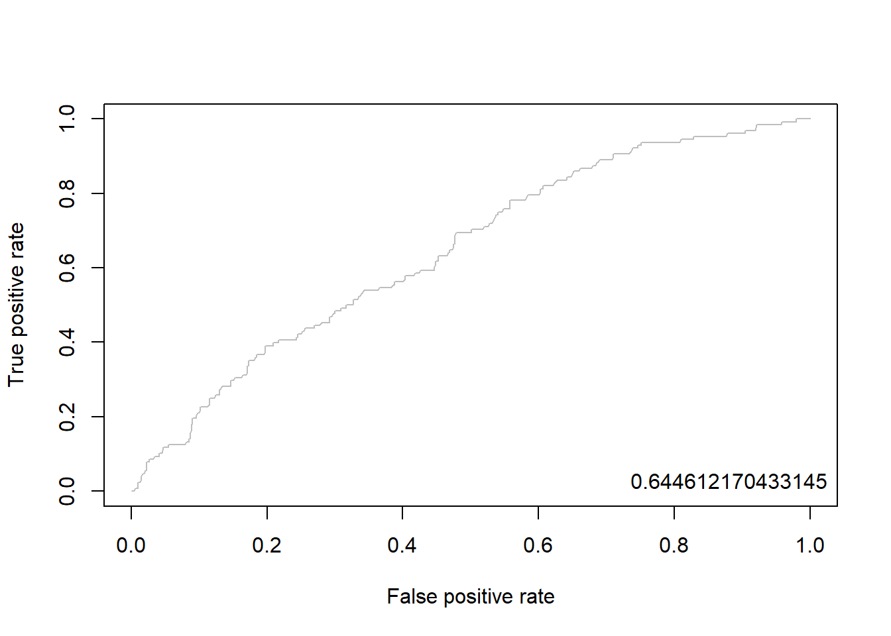
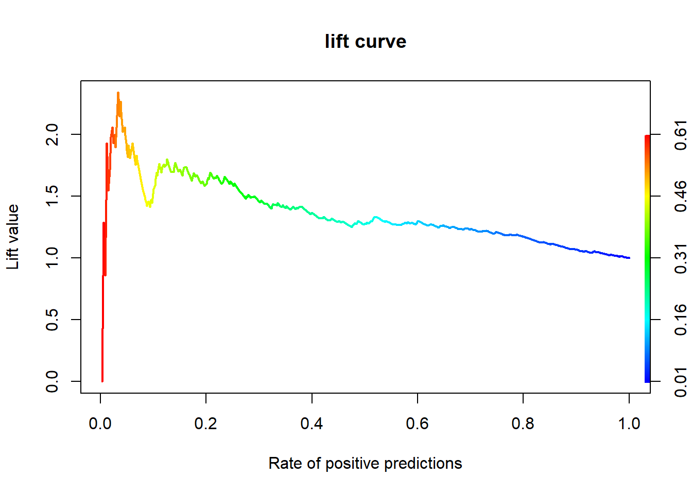

pacman::p_load("data.table",
"dplyr", "tidyr", "magrittr",
"ggplot2",
"e1071", # For naiveBayes
"caret") # For confusionMatrix
delays.df <- fread("../FlightDelays.csv") # 데이터 불러오기
delays.df %>%
as_tibble2 Naive Bayes Classification
Naive Bayes의 장점
- 연속형과 범주형 예측 변수 모두 가능하다.
- 튜닝(Tuning)해야 하는 초모수(Hyperparameter)가 없다.
- Topic 분류 문제에 잘 작동한다.
Naive Bayes의 단점
- 연속형 예측 변수는 정규 분포를 가정한다.
- 예측 변수들은 서로 독립이어야 한다.
실습 자료 : 2004년 1월 한 달간 워싱턴 D.C.에서 출발하여 뉴욕에 도착한 2,201대의 항공편에 대한 자료(출처 : www.transtats.bts.gov)이며, 총 13개의 변수를 포함하고 있다. 13개의 변수 중 분석을 위해 사용할 변수는
CRS_DEP_TIME,CARRIER,DEST,ORIGIN,DAY_WEEK,Flight Status이며, Target은Flight Status이다.

2.1 데이터 불러오기
# A tibble: 2,201 × 13
CRS_DEP_TIME CARRIER DEP_TIME DEST DISTANCE FL_DATE FL_NUM ORIGIN Weather DAY_WEEK DAY_OF_MONTH TAIL_NUM `Flight Status`
<int> <chr> <int> <chr> <int> <chr> <int> <chr> <int> <int> <int> <chr> <chr>
1 1455 OH 1455 JFK 184 01/01/2004 5935 BWI 0 4 1 N940CA ontime
2 1640 DH 1640 JFK 213 01/01/2004 6155 DCA 0 4 1 N405FJ ontime
3 1245 DH 1245 LGA 229 01/01/2004 7208 IAD 0 4 1 N695BR ontime
4 1715 DH 1709 LGA 229 01/01/2004 7215 IAD 0 4 1 N662BR ontime
5 1039 DH 1035 LGA 229 01/01/2004 7792 IAD 0 4 1 N698BR ontime
6 840 DH 839 JFK 228 01/01/2004 7800 IAD 0 4 1 N687BR ontime
7 1240 DH 1243 JFK 228 01/01/2004 7806 IAD 0 4 1 N321UE ontime
8 1645 DH 1644 JFK 228 01/01/2004 7810 IAD 0 4 1 N301UE ontime
9 1715 DH 1710 JFK 228 01/01/2004 7812 IAD 0 4 1 N328UE ontime
10 2120 DH 2129 JFK 228 01/01/2004 7814 IAD 0 4 1 N685BR ontime
# ℹ 2,191 more rows2.2 데이터 전처리
- 전처리는 2단계의 과정을 거친다.
- 출발시간(CRS_DEP_TIME)을 시간 단위(Hourly)로 변환한다.
- 예를 들어,
1455이면14시 55분을 의미하며, 이것을14로 변환한다.
- 예를 들어,
- 범주형 변수들을 범주형으로 변환한다.
- 출발시간(CRS_DEP_TIME)을 시간 단위(Hourly)로 변환한다.
# 1. 출발시간(CRS_DEP_TIME)을 시간 단위(hourly)로 변환
# 예) 출발시간이 오전 6시와 오전 7시 사이라면, CRS_DEP_TIME = 6
delays.df %<>%
data.frame() %>% # Data Frame 형태로 변환
mutate(CRS_DEP_TIME = floor( CRS_DEP_TIME/100 ))
# 2. Convert to Factor
selected.var <- c("CRS_DEP_TIME", "CARRIER", "DEST", # 범주형 변수 선택
"ORIGIN", "DAY_WEEK", "Flight.Status")
delays.df %<>%
mutate_at(selected.var, as.factor) # 범주형으로 변환
# 3. Select Variables used for Analysis
delays.df1 <- delays.df %>%
select(selected.var) # 분석에 사용할 변수만 선택
delays.df1 %>%
as_tibble# A tibble: 2,201 × 6
CRS_DEP_TIME CARRIER DEST ORIGIN DAY_WEEK Flight.Status
<fct> <fct> <fct> <fct> <fct> <fct>
1 14 OH JFK BWI 4 ontime
2 16 DH JFK DCA 4 ontime
3 12 DH LGA IAD 4 ontime
4 17 DH LGA IAD 4 ontime
5 10 DH LGA IAD 4 ontime
6 8 DH JFK IAD 4 ontime
7 12 DH JFK IAD 4 ontime
8 16 DH JFK IAD 4 ontime
9 17 DH JFK IAD 4 ontime
10 21 DH JFK IAD 4 ontime
# ℹ 2,191 more rowsglimpse(delays.df1) # 데이터 구조 확인 Rows: 2,201
Columns: 6
$ CRS_DEP_TIME <fct> 14, 16, 12, 17, 10, 8, 12, 16, 17, 21, 21, 14, 9, 12, 14, 17, 20, 15, 6, 18, 9, 13, 14, 15, 19, 8, 9, 11, 13, 15, 17, 21, 14, 17, 10, 7, 13, 17, 8, 17, 12, 21, 17, 19, 15, 19, …
$ CARRIER <fct> OH, DH, DH, DH, DH, DH, DH, DH, DH, DH, DH, DL, DL, DL, DL, DL, DL, MQ, MQ, MQ, MQ, MQ, MQ, MQ, MQ, UA, US, US, US, US, US, US, RU, RU, RU, RU, CO, CO, DH, DH, DH, DH, RU, RU, …
$ DEST <fct> JFK, JFK, LGA, LGA, LGA, JFK, JFK, JFK, JFK, JFK, LGA, JFK, LGA, LGA, LGA, LGA, LGA, JFK, JFK, JFK, LGA, LGA, LGA, LGA, LGA, LGA, LGA, LGA, LGA, LGA, LGA, LGA, EWR, EWR, EWR, E…
$ ORIGIN <fct> BWI, DCA, IAD, IAD, IAD, IAD, IAD, IAD, IAD, IAD, IAD, DCA, DCA, DCA, DCA, DCA, DCA, DCA, DCA, DCA, DCA, DCA, DCA, DCA, DCA, IAD, DCA, DCA, DCA, DCA, DCA, DCA, BWI, BWI, BWI, B…
$ DAY_WEEK <fct> 4, 4, 4, 4, 4, 4, 4, 4, 4, 4, 4, 4, 4, 4, 4, 4, 4, 4, 4, 4, 4, 4, 4, 4, 4, 4, 4, 4, 4, 4, 4, 4, 4, 4, 4, 4, 4, 4, 4, 4, 4, 4, 4, 4, 4, 4, 4, 4, 4, 4, 5, 5, 5, 5, 5, 5, 5, 5, 5,…
$ Flight.Status <fct> ontime, ontime, ontime, ontime, ontime, ontime, ontime, ontime, ontime, ontime, ontime, ontime, ontime, ontime, ontime, ontime, ontime, ontime, ontime, ontime, ontime, ontime, …2.3 데이터 탐색
# 데이터 구조 변환
visual.df <- pivot_longer(delays.df1,
cols = -Flight.Status, # Target 제외
names_to = "Variables", # 변수 이름이 입력될 새로운 열 이름
values_to = "values" # 변수에 입력된 값에 대한 새로운 열 이름
)
visual.df# A tibble: 11,005 × 3
Flight.Status Variables values
<fct> <chr> <fct>
1 ontime CRS_DEP_TIME 14
2 ontime CARRIER OH
3 ontime DEST JFK
4 ontime ORIGIN BWI
5 ontime DAY_WEEK 4
6 ontime CRS_DEP_TIME 16
7 ontime CARRIER DH
8 ontime DEST JFK
9 ontime ORIGIN DCA
10 ontime DAY_WEEK 4
# ℹ 10,995 more rowsggplot(visual.df, aes(values, fill = Flight.Status)) +
facet_wrap(~ Variables, scales = "free") +
geom_bar(position = "dodge") +
scale_fill_manual(values=c("#E69F00", "#56B4E9")) + # 막대 색깔 지정
theme_bw()ggplot(visual.df, aes(values, fill = Flight.Status)) +
facet_wrap(~ Variables, scales = "free") +
geom_bar(position = "fill") +
scale_fill_manual(values=c("#E69F00", "#56B4E9")) + # 막대 색깔 지정
theme_bw()ggplot(visual.df, aes(values, fill = Flight.Status)) +
facet_wrap(~ Variables, scales = "free") +
geom_bar(position = "stack") +
scale_fill_manual(values=c("#E69F00", "#56B4E9")) + # 막대 색깔 지정
theme_bw()2.4 데이터 분할
# Partition (Training Dataset : Test Dataset = 7:3)
y <- delays.df1$Flight.Status # Target
set.seed(200)
ind <- createDataPartition(y, p = 0.7, list = T) # Index를 이용하여 7:3으로 분할
delays.trd <- delays.df1[ind$Resample1, ] # Training Dataset
delays.ted <- delays.df1[-ind$Resample1, ] # Test Dataset2.5 모형 훈련
함수
naiveBayes를 이용하여 Naive Bayes를 수행할 수 있다. 함수에서 사용할 수 있는 자세한 옵션은 여기를 참고한다.
naiveBayes(formula, data, laplace = 0, ...)formula: Target과 예측 변수의 관계를 표현하기 위한 함수로써 일반적으로Target ~ 예측 변수의 형태로 표현한다.data:formula에 포함된 변수들의 데이터셋laplace: 라플라스 스무딩(Laplace Smoothing)을 위한 가중치 \(\alpha\)- 범주형 예측 변수에 대해 사건 발생 가능성이 매우 희박하여 우도가 0이 되는 경우를 방지하기 위해 사용하는 옵션
- 예를 들어, 스팸 메일 분류(나이브 베이즈 PPT, p.7)에서 스팸 메일 중 “비아그라 단어가 포함”된 메일이 있을 확률, 즉, 우도 \(P(\text{비아그라 포함}|\text{스팸})\)에 라플라스 스무딩을 적용하면 다음과 같다. \[
\begin{align*}
P(\text{비아그라 포함}|\text{스팸})=\frac{\text{비아그라가 포함된 스팸 메일 수}+\alpha}{\text{전체 스팸 메일 수} + k\times \alpha}
\end{align*}
\]
- \(k\) : 범주형 예측 변수의 class 개수로 해당 예제에서는 “비아그라 포함 O/비아그라 포함 X”로 \(k=2\)이다.
delays.nb <- naiveBayes(Flight.Status ~ ., # Target ~ 예측 변수
data = delays.trd)
delays.nb
Naive Bayes Classifier for Discrete Predictors
Call:
naiveBayes.default(x = X, y = Y, laplace = laplace)
A-priori probabilities:
Y
delayed ontime
0.1945525 0.8054475
Conditional probabilities:
CRS_DEP_TIME
Y 6 7 8 9 10 11 12 13 14 15 16 17 18 19 20 21
delayed 0.02666667 0.04666667 0.07000000 0.02666667 0.01666667 0.01666667 0.04333333 0.05333333 0.17000000 0.07000000 0.08333333 0.15666667 0.03000000 0.07666667 0.02333333 0.09000000
ontime 0.06682770 0.06521739 0.06924316 0.06199678 0.04991948 0.03623188 0.06280193 0.07568438 0.09581320 0.06682770 0.08132045 0.10064412 0.04508857 0.04186795 0.02415459 0.05636071
CARRIER
Y CO DH DL MQ OH RU UA US
delayed 0.07666667 0.32000000 0.11666667 0.18000000 0.01333333 0.19333333 0.01333333 0.08666667
ontime 0.03542673 0.23349436 0.17632850 0.12962963 0.01529791 0.18115942 0.01368760 0.21497585
DEST
Y EWR JFK LGA
delayed 0.3766667 0.2100000 0.4133333
ontime 0.2882448 0.1723027 0.5394525
ORIGIN
Y BWI DCA IAD
delayed 0.07666667 0.52666667 0.39666667
ontime 0.06280193 0.64492754 0.29227053
DAY_WEEK
Y 1 2 3 4 5 6 7
delayed 0.1900000 0.1500000 0.1166667 0.1466667 0.1766667 0.0600000 0.1600000
ontime 0.1264090 0.1336554 0.1545894 0.1876006 0.1626409 0.1336554 0.1014493Result! 첫 번째 Table A-priori probabilities는 Target \(Y\)의 각 class에 대한 사전확률 \(P(Y=y)\)이고, 두 번째 Table Conditional probabilities는 예측 변수 \(X\)가 범주형일 때는 \(P(X|Y)\)를 나타내며, 연속형일 때는 평균과 표준편차를 나타낸다.
2.6 모형 평가
Caution! 모형 평가를 위해 Test Dataset에 대한 예측 class/확률 이 필요하며, 함수 predict()를 이용하여 생성한다.
# 예측 class 생성
pred.class <- predict(delays.nb,
newdata = delays.ted[,-6]) # 함수 predict에서는 Target 제외
# 예측 확률( 사후확률 P(Y|X) ) 생성
pred.prob <- predict(delays.nb,
newdata = delays.ted[,-6], # 함수 predict에서는 Target 제외
type = "raw")
# Test Dataset의 실제값과 예측 결과
df <- data.frame(actual = delays.ted$Flight.Status,
pred.class = pred.class, pred.prob)
df %>%
as_tibble# A tibble: 659 × 4
actual pred.class delayed ontime
<fct> <fct> <dbl> <dbl>
1 ontime ontime 0.303 0.697
2 ontime ontime 0.302 0.698
3 ontime ontime 0.0325 0.967
4 ontime ontime 0.122 0.878
5 ontime ontime 0.0702 0.930
6 ontime ontime 0.162 0.838
7 ontime ontime 0.0690 0.931
8 ontime ontime 0.0969 0.903
9 ontime ontime 0.187 0.813
10 ontime ontime 0.241 0.759
# ℹ 649 more rows# 일요일 오전 10시와 오전 11시 사이에 DCA (레이건 국립공항)에서 LGA (라 과디아 공항)로 가는 DL (델타 항공)의 연착 여부 예측 결과
df[delays.ted$DAY_WEEK == 7 & delays.ted$CRS_DEP_TIME == 10 & delays.ted$ORIGIN == "DCA" &
delays.ted$DEST == "LGA" & delays.ted$CARRIER == "DL",] actual pred.class delayed ontime
215 ontime ontime 0.05002181 0.94997822.6.1 ConfusionMatrix
CM <- caret::confusionMatrix(pred.class, delays.ted$Flight.Status,
positive = "delayed") # confusionMatrix(예측 class, 실제 class, positive = "관심 class")
CMConfusion Matrix and Statistics
Reference
Prediction delayed ontime
delayed 12 21
ontime 116 510
Accuracy : 0.7921
95% CI : (0.7591, 0.8225)
No Information Rate : 0.8058
P-Value [Acc > NIR] : 0.8256
Kappa : 0.0755
Mcnemar's Test P-Value : 9.671e-16
Sensitivity : 0.09375
Specificity : 0.96045
Pos Pred Value : 0.36364
Neg Pred Value : 0.81470
Prevalence : 0.19423
Detection Rate : 0.01821
Detection Prevalence : 0.05008
Balanced Accuracy : 0.52710
'Positive' Class : delayed
2.6.2 ROC 곡선
# 예측 확률( 사후확률 P(Y|X) )
pred.prob %>%
as_tibble# A tibble: 659 × 2
delayed ontime
<dbl> <dbl>
1 0.303 0.697
2 0.302 0.698
3 0.0325 0.967
4 0.122 0.878
5 0.0702 0.930
6 0.162 0.838
7 0.0690 0.931
8 0.0969 0.903
9 0.187 0.813
10 0.241 0.759
# ℹ 649 more rowsdelayed.pred.prob <- pred.prob[,1] # "Flight.Status = delayed"에 대한 예측 확률
ac <- ifelse(delays.ted$Flight.Status == "delayed", 1, 0) # 실제 class를 수치형으로 변환
pp <- as.numeric(delayed.pred.prob) # 예측 확률을 수치형으로 변환2.6.2.1 Package “pROC”
pacman::p_load("pROC")
nb.roc <- roc(ac, pp, plot = T, col = "gray") # roc(실제 class, 예측 확률)
auc <- round(auc(nb.roc), 3)
legend("bottomright", legend = auc, bty = "n")Caution! Package "pROC"를 통해 출력한 ROC 곡선은 다양한 함수를 이용해서 그래프를 수정할 수 있다.
# 함수 plot.roc() 이용
plot.roc(nb.roc,
col="gray", # Line Color
print.auc = TRUE, # AUC 출력 여부
print.auc.col = "red", # AUC 글씨 색깔
print.thres = TRUE, # Cutoff Value 출력 여부
print.thres.pch = 19, # Cutoff Value를 표시하는 도형 모양
print.thres.col = "red", # Cutoff Value를 표시하는 도형의 색깔
auc.polygon = TRUE, # 곡선 아래 면적에 대한 여부
auc.polygon.col = "gray90") # 곡선 아래 면적의 색깔# 함수 ggroc() 이용
ggroc(nb.roc) +
annotate(geom = "text", x = 0.9, y = 1.0,
label = paste("AUC = ", auc),
size = 5,
color="red") +
theme_bw()2.6.2.2 Package “Epi”
pacman::p_load("Epi")
# install_version("etm", version = "1.1", repos = "http://cran.us.r-project.org")
ROC(pp, ac, plot = "ROC") # ROC(예측 확률, 실제 class) 2.6.2.3 Package “ROCR”
pacman::p_load("ROCR")
pred <- prediction(pp, ac) # prediction(예측 확률, 실제 class)
perf <- performance(pred, "tpr", "fpr") # performance(, "민감도", "1-특이도")
plot(perf, col = "gray") # ROC Curve
perf.auc <- performance(pred, "auc") # AUC
auc <- attributes(perf.auc)$y.values
legend("bottomright", legend = auc, bty = "n")
2.6.3 향상 차트
2.6.3.1 Package “ROCR”
# 향상 차트(Curve)
perf <- performance(pred, "lift", "rpp") # Lift Chart
plot(perf, main = "lift curve",
colorize = T, # Coloring according to cutoff
lwd = 2)
2.6.3.2 Package “gains”
# 향상 차트(십분위)
pacman::p_load("gains")
gain <- gains(ac, pp) # gains(실제 class, 예측 확률)
barplot(gain$mean.resp / mean(ac),
names.arg = gain$depth,
xlab = "Percentile",
ylab = "Mean Response",
main = "Decile-wise lift chart")